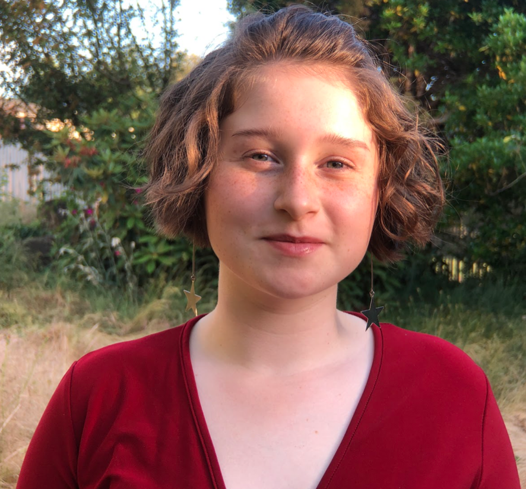

Jenna
Jenna is the teams's PI.
Akalpit
Akalpit is the Wiki team cheer leader. He enjoys working with future scientists and engineers. He is a nerd and excited about STEM education.
Catherine
Catherine is a Wet Lab team leader who does way too many things at once.
Caroline
Caroline is the Wiki team leader and co-leads the Wet Lab team.

Max
Max is a student at the Science and Math institute (class of 2021). Despite his powerful strength as a follower, he somehow ended up as a design/media leader. When he's not confusing himself and his subteam with scheduling, he's probably keeping carbohydrated with ungodly quantities of pasta, listening to 80s and weird alternative music, plotting his escape to Canada and/or Iceland, making pun-ishably bad jokes, or guzzling tea. He is also a member of his school's Gender and Sexuality Alliance, Newspaper Club, Feminist Club, and Envirothon team. The first words that he spoke at the dawn of the new decade were: "wait, what?" which pretty much embodies his personality. This is his second year on the Tacoma RAINmakers/BioSynth team. Last year he helped lift his team to international fame by putting down some questionable answers to puzzles.

Sam
Sam co-leads Design/media and is a membe of the Wet Lab team.

Adam
Adam is a member of the Wiki and Design/media teams.

Adeline
Addy is a member of the Wet Lab team.

Anna
Anna is an undergraduate student at Washington State University, majoring in Animal Sciences with a Pre-Vet path. Whenever she is not working as an office assistant, writing children's stories, doing school stuff, or working with animals, she can be found hanging out with friends, listening to music, stressing about anything and everything in life, or deciding what to eat, because she can never figure out what she wants. She can also be found reading, especially since her classes have all gone online, including the 3.5 science classes she's taking. She likes to think that she's fine with this, but to prove she's not: she went to Half Price Books and bought 7 vet-related books, including a Veterinary Dictionary, which she may love more than she likes to admit. Anna has contributed to the team by waiting until the last minute to thoroughly complete her work. Hey, at least she completed it, and learned a ton in the process!
Ava
Ava is a member of the Wet Lab team.

Daniel
Daniel is a member of the Wiki team

Ellie
Ellie is a member of the Wiki and Design/media teams.
Gracie
Gracie is a member of the Wet Lab team.

Henry
Henry is a member of the Wet Lab team.
Jazmin
Jazmin is a member of the Wet Lab team.
Kaitlin
Kaitlin is a student at the University of Puget Sound studying molecular biology. When she's not battling her supreme nemesis, non-automatic doors, she loves taking care of her leaf-babies, contemplating the end of time, appreciating nature, and baking the best banana bread in the neighborhood. She drinks lots of water because she appreciates her internal organs, and she wants her internal organs to appreciate her back. She is also involved in scouting, and is currently working on building a greenhouse for her Eagle service project. Her biggest contribution to the success of the team was making the potato in the logo extra purple, so the common folk of society may gaze upon his beauty. Yes, the logo potato is a he, and his name is Sir Potatio (pronounced poh-tay-shee-oh).

Marisa
Marisa is a member of the Wet Lab and Design/media teams.

Mel
Mel is a member of the Wet Lab, Wiki, and Design/media teams.

Richard
Richard is a member of both the Wiki and Wet Lab teams.

Salma
Salma is a member of the Wet Lab team.

Sonika
Sonika was a member of the extinct Human Practices team.

Tara
Tara is a sophomore at Foss High School and was thrown into the fun that is Tacoma BioSynth for the first time amid the pandemic. That ride has consisted of being very quiet and confused but having a lot of fun listening to and learning from the rest of the team. Which is fantastic because she’s here to learn about super cool applied science, a topic second only to math. When Tara isn’t doing school work she’s still at school prepping for math team competitions, having fun with the Reader’s and Writer’s Club and GSA, or running… very slowly. Outside school Tara writes silly things, eats a lot of popcorn, and plays D&D. In the future Tara hopes to continue doing research, use math and science to save the planet and provide solutions that get us closer to a just and equitable world.

Zoha
Zoha is currently a junior at Charles Wright Academy and joined Tacoma BioSynth because she wanted to end world hunger. Unfortunately, she can't do that on her own, so she decided that researching bacterial plastic degradation at Tacoma BioSynth was a good alternative. Apart from that, Zoha enjoys playing tennis, teasing her sister, and occasionally reading a book. Looking to the future, she hopes to continue to pursue research and eventually become a doctor.